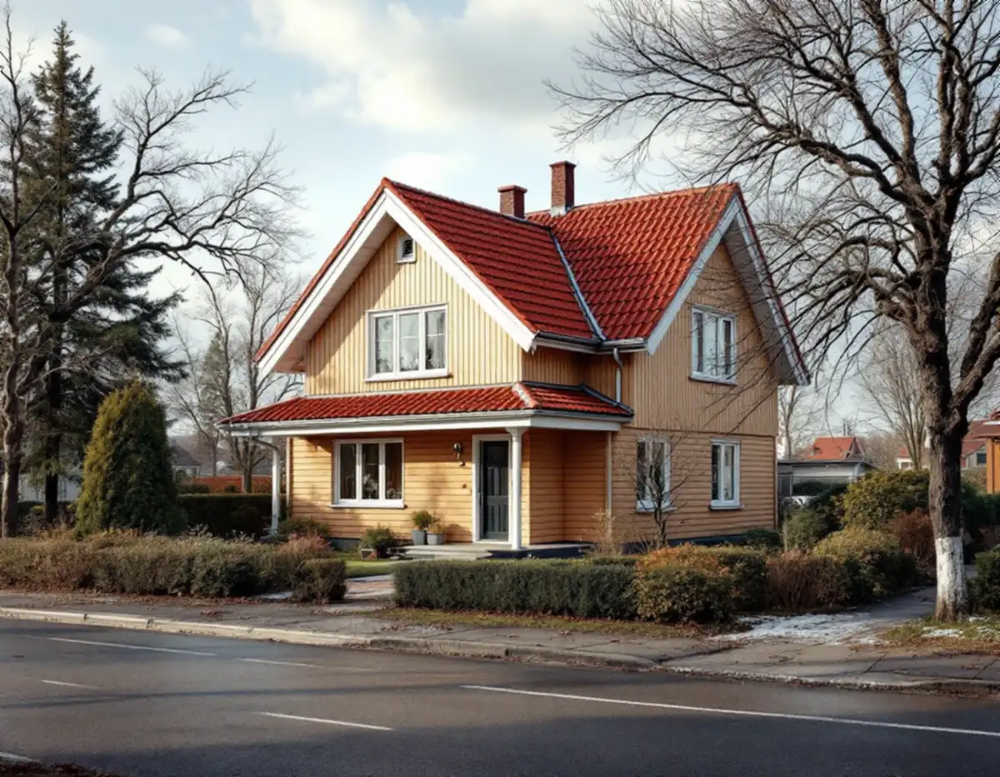
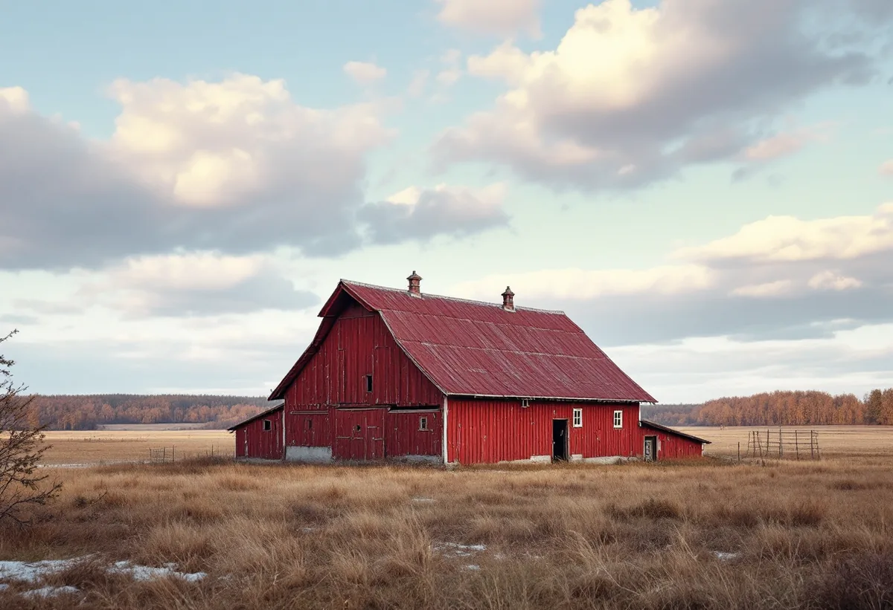

Platsbesök och läge
Vi ser huset, tomten och vägen dit, och noterar om fastigheten ligger i ett riksintresse eller ett kulturmiljöområde.
I Vallentuna gäller en takrenovering oftast villor och radhus från tätortens stora utbyggnad 1960–1980, där underlagspapp, läkt och plåt nått slutet av sin livslängd. Utanför tätorten handlar det också om permanentade fritidshus och gårdar i öppet jordbrukslandskap, där vind, takstolarnas skick och kommunens riksintressen avgör hur taket ska läggas om.

Vallentuna tätort växte fram kring stationen när järnvägen Stockholm–Rimbo öppnade 1885, men det mesta av villabebyggelsen är betydligt yngre. Enligt SCB bodde 3 516 personer i tätorten 1960, 8 823 år 1970 och 18 435 år 1980.
Lindholmen, längre norrut på Roslagsbanan, beskrivs i kommunens fördjupade översiktsplan som ett småskaligt stationssamhälle vars bebyggelse huvudsakligen vuxit fram sedan 1970-talet, med villor och gruppbyggda småhus. Karby och Brottby, med drygt 1 200 invånare, har fått karaktären av ett stationssamhälle intill E18, medan den äldre bebyggelsen ligger i små grupper på höjderna.
Den tredje typen är fritidshusen. Enligt översiktsplanen har de flesta fritidshusområden i kommunen sedan 1990-talet omvandlats till permanentboende. Garns-Ekskogen i östra delen har omkring 500 bebyggda fastigheter och detaljplaner för fritidshus, och Lövsättra stugby ska behålla sin fritidsprägel.

Ett tak från 1970-talet som aldrig lagts om har i dag ett underlag som är omkring 50 år gammalt. Småhus från den här tiden fick ofta betongpannor på papp och läkt, och det som brukar ge sig först är papp och läkt vid takfoten, plåten kring skorsten och genomföringar samt rännorna. Pannorna kan ibland läggas tillbaka, men på många tak har ytan slitits så att de suger vatten.
Permanentade fritidshus är en egen kategori. Många är byggda för sommarbruk och har sedan byggts till i omgångar, vilket kan ge flera takfall med olika lutning och skarvar mellan gammalt och nytt. Där kontrollerar vi takstolarnas dimensioner och skick innan vi föreslår material. Ett tyngre tak kan kräva förstärkning, och då behövs en anmälan till kommunen.
På gårdarna finns både bostadshus och ekonomibyggnader. Gamla korrugerade skivor på uthus och lador kan innehålla asbest och hanteras därför enligt särskilda regler innan nytt tak läggs. Mer om materialvalen finns i tegel, betong eller plåt.
Karby och Brottby ligger enligt kommunen i ett småskaligt landskap med skogsklädda kullar och öppen åker- och ängsmark emellan, och den äldre bebyggelsen syns på långt håll från sina höjdlägen. Hus som står fritt i odlingslandskapet tar mer vind än villorna i tätorten, så där är infästning av pannor, nockar och vindskivor viktig.
I tätorten är det i stället Vallentunasjön som präglar läget. Hus nära sjön och skogsdungarna får mer fukt och skugga, vilket ger mossa på norrsidan och barr i rännorna. Se mossa på taket och taktvätt.
Sedan 1 december 2025 krävs normalt inget bygglov för nytt tak eller ommålning på ett en- eller tvåbostadshus. Vallentuna kommun skriver på sin sida om fasadändring att ändringar ändå alltid ska göras varsamt, och att bygglov alltid krävs om fastigheten ligger i ett kulturhistoriskt särskilt värdefullt område eller om byggnaden är kulturhistoriskt särskilt värdefull. Boverket beskriver samma undantag, bland annat skyddsbestämmelser i detaljplan och utökad lovplikt. Höjs taket kan det räknas som tillbyggnad, så stäm av med kommunen innan takets form eller höjd ändras.
Kommunen har fyra kvarvarande riksintressen för kulturmiljövården: Skålhamravägen, Markim-Orkesta, Frösunda sockencentrum och Vada-Össeby-Garn längs Långhundraleden. Riksintresset i Kårsta har utgått, men stora delar av området pekas fortfarande ut av kommunen som område med höga kulturhistoriska kvaliteter. Samma klassning har Lindholmen, Tarby och Fastarby i kommunens kulturmiljöprogram.
Ligger din gård eller ditt hus i något av de här områdena, stäm av med kommunen innan du byter material eller kulör. Läs mer om bygglov vid takbyte.
På en gård är det sällan bara ett tak. Bostadshus, garage och ekonomibyggnader har ofta olika material och ålder, och det kan löna sig att planera dem i samma omgång så att ställning och container bara behöver etableras en gång. På långa grusade uppfarter planerar vi leveranser och var containern ska stå.
För de äldre bostadshusen i gårdsmiljöerna gäller samma sak som kommunen säger om kulturmiljöerna i stort: ändringar ska anpassas till platsens bebyggelsemönster och karaktär. Ett gammalt tegeltak läggs därför helst om med samma tegel, och ett plåttak på en lada byts mot plåt med liknande profil och kulör.
På en villa i Ormsta eller Bällsta tar vi ner pannorna, river gammal papp och läkt och kontrollerar råsponten. Fuktskadade partier byts, och sedan läggs ny underlagspapp, ny bärläkt och ströläkt. Pannorna läggs tillbaka om de håller, annars väljs nya.
Vid samma tillfälle görs plåten om: fotplåt, ränndalar, vindskivor och skorstensplåt. Vi ser också över hängrännor och stuprör och att det finns luftning vid takfoten, så att vinden inte blir fuktig. På ett permanentat fritidshus kan det vara läge att samtidigt se över vindsisoleringen.
Mer om oss som takläggare i Vallentuna och om metoden finns under takrenovering. Är du osäker på om det räcker med en omläggning, jämför takbyte eller takrenovering.
Vi ser huset, tomten och vägen dit, och noterar om fastigheten ligger i ett riksintresse eller ett kulturmiljöområde.
Särskilt på permanentade fritidshus och gårdshus bedömer vi om konstruktionen klarar det tak som ska läggas.
Villan i tätorten, fritidshuset och ladan får var sitt förslag, anpassat till vind, lutning och husets karaktär.
Ställning, container och leveranser planeras efter uppfart och mark, särskilt på landsbygden.
Underlaget byggs nytt, pannor läggs tillbaka eller byts och all plåt görs om.
Rännor och stuprör monteras, området städas och du får en genomgång av det som är gjort.
Rotavdraget är 30 procent av arbetskostnaden, högst 50 000 kronor per person och år, och högst 75 000 kronor tillsammans med rutavdrag. Material och resekostnader ger inget avdrag. Vi drar av beloppet direkt på fakturan, och två ägare kan använda var sitt utrymme.
Enligt Skatteverket gäller rotavdraget även fritidshus, så länge du äger huset och använder det som fritidsbostad. Ett hus som hyrs ut ger däremot inte rätt till avdrag. Läs mer om rotavdrag för takarbete.
I Vallentuna styrs kostnaden främst av hur mycket av underlaget som behöver bytas, om pannorna kan återanvändas och om takstolarna behöver förstärkas. På landsbygden påverkar även avståndet till tomten, uppfarten och om flera byggnader görs samtidigt. Läs mer i vad kostar en takrenovering eller gör en egen uppskattning i kalkylatorn.
Takbyte, besiktning och plåtarbeten.
Takläggare i Vallentuna →Så fungerar en omläggning.
Takrenovering och takomläggning →Det här styr priset.
Vad kostar en takrenovering? →Räkna på takytan och ROT.
Takbyte-kalkylator →Näsbypark, Viggbyholm och Gribbylund.
Takrenovering i Täby →Bollstanäs, Vilunda och Runby.
Takrenovering i Upplands Väsby →Roslagen, skärgård och fritidshus.
Takrenovering i Norrtälje →